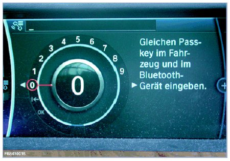
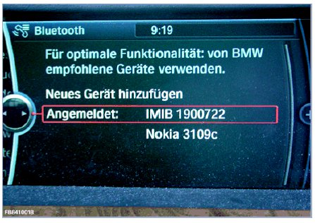
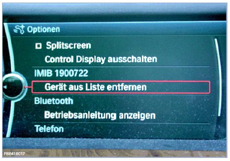

Functional Description of Integrated Bluetooth Check
Functional Description Of Integrated Bluetooth Check
Bluetooth check for mobile end devices with a Bluetooth connection
The Integrated Measurement Interface Box (IMIB) makes it possible to carry out a Bluetooth check in the vehicle.
The IMIB acts in a similar way to a mobile phone, and can be connected to the vehicle to checked in this way.
Please refer to the operating instructions of the vehicle for the procedure for establishing a Bluetooth connection to the vehicle, also known as Bluetooth pairing. A procedure for carrying out the Bluetooth check is available in the ISTA diagnosis system.
NOTE: It is necessary to connect the IMIB to an ISID via the network in order to carry out the Bluetooth check. The result of the Bluetooth check is recorded in the diagnosis report. The Bluetooth check must be used as an additional tool for performing diagnoses on BMW group vehicles. If the check has not been performed successfully, a vehicle diagnosis must be performed using ISTA. Warranty-related invoicing can only take place after a full diagnosis has taken place.
In order to carry out the Bluetooth checks successfully, the following general conditions must be taken into consideration.
- The latest software must be installed on the IMIB.
- Battery charger connected.
- Ignition turned on.
- During the Bluetooth check, the IMIB must be on the driver's seat of the vehicle being checked.
- Determine the Bluetooth passkey if necessary.
NOTE:
The Bluetooth passkey to be used can be found in the vehicle documentation or on the label on the telephone control unit for vehicles E46, E83, E53, E85, E86, E65, E66, E67, E68 and RR1, RR2, RR3 (depending on equipment). This can additionally be read out via diagnosis and the control unit functions of the telephone control unit.
The examples listed in the description refer only to connections with BMW vehicles. The system behaves identically for vehicles of the type MINI or Rolls-Royce.
Follow the instructions in the procedure when performing the Bluetooth check.
Preparations for the Bluetooth check
Place the IMIB on the driver's seat of the vehicle to be checked. Activate Bluetooth on the vehicle and activate the device search of the vehicle as described in the operating instructions.
NOTE: Found vehicles report with name (brand) and number (the last 5 digits of the vehicle identification number) in the procedure selection.
Examples:
- BMW 17881
- MINI 36617
- RR 32002
Enter the Bluetooth passkey
Enter the Bluetooth passkey in the vehicle and confirm by pressing OK when prompted.
NOTE: The Bluetooth passkey may not exceed 4 digits for the check. (example on a F01 with Combox.) The Bluetooth passkey entered in the vehicle must be identical to the Bluetooth passkey entered in the procedure (provided this is not predetermined by the control unit).

NOTE: Vehicle E46, E83, E53, E85, E86, E65, E66, E67, E68 and RR1, RR2, RR3 (depending on equipment) are equipped with a fixed Bluetooth passkey. For the vehicles the entry of the Bluetooth passkey in the vehicle is dispensed with. The Bluetooth passkey to be used is found in the vehicle documentation or on the label on the control unit. This can additionally be read out via the control unit functions of the telephone control unit.
IMID displayed in Control Display
The device name of the IMIB is: IMIB XXXXX (XXXXX = serial number of IMIB)

NOTE: If the Bluetooth check was not successful, repeat the test with the IMIB placed close to the telephone control unit. If the vehicle is found when the Bluetooth check is performed near the control unit, then the fault is most likely due to the connector of the Bluetooth antenna cable at the control unit. In this case, continue the troubleshooting there.
Cancelling the Bluetooth pairing
The Bluetooth check can be repeated. To do this, the Bluetooth pairing must be cancelled in the vehicle telephone menu. Change to the main menu in the telephone menu. The Bluetooth pairing can now be re-established.
Delete the IMIB from the list of connected devices in the vehicle:
The IMIB must still be deleted as a connected Bluetooth device from the vehicle list after the Bluetooth check. Otherwise an extra Bluetooth device will be stored in the vehicle memory unnecessarily. Refer to the vehicle operating instructions for this function.

We can assume no liability for printing errors or inaccuracies in this document and reserve the right to introduce technical modifications at any time.